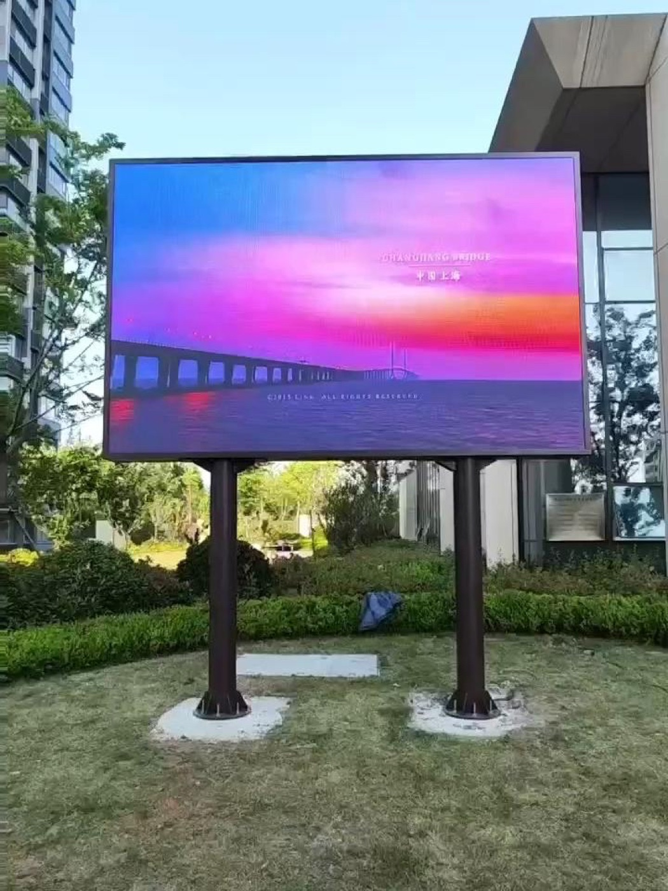

Outdoor LED advertising has become the default for large-format messaging in cities. A digital billboard can change its message by the hour, sell the same slot to many advertisers, and run a campaign the day it is booked, none of which a printed poster can do. That operational advantage is why digital out-of-home keeps taking share from static media.
The hardware has matured as well. Outdoor LED cabinets are sealed to IP65, bright enough to read in direct sun, and rated for years of continuous operation. What was once a fragile novelty is now a dependable utility, and buyers treat it like any other piece of street infrastructure.
Revenue follows attention. Screens on busy roads, at junctions, and near transit hubs command the highest rates because they reach the most people. The site, not the panel, is the main driver of value, which is why location studies matter more than specification sheets when a network is planned.
Regulation shapes the market. Many cities limit brightness at night, restrict motion near roads, and control the distance between screens. A project that ignores the local rules can be built and then forced to dim or switch off, so permits belong at the start of the plan, not the end.
This guide covers brightness and pitch for billboards, weather and structural protection, permits, and the content rules that keep an outdoor screen legal, legible, and profitable.
Outdoor screens fight the sun, so brightness is the first specification. Daylight legibility generally needs 5000 nits and up, and a billboard facing the sun or a bright sky may need 8000 to 10000 nits to stay readable at noon. Brightness that looks generous indoors is invisible outdoors.
Pitch follows viewing distance. A billboard read from a hundred metres can use a coarse pitch such as P10 to P16, because the eye cannot resolve fine detail at that range and a coarse pitch costs far less. A street-level screen viewed from ten to twenty metres needs a finer P4 to P8 to keep text sharp.
The rule of thumb is about one millimetre of pitch for each metre of viewing distance. Apply it to the nearest realistic viewer, not the far edge of the road, because the closest driver sets the legibility requirement for the whole screen.
Content resolution should match the panel. A coarse billboard should carry bold shapes, large type, and few words, because fine text becomes unreadable blocks. Designing content at the wrong scale is one of the most common reasons a new billboard looks disappointing on the first day.
Viewing angle matters at intersections where traffic approaches from several directions. A screen that faces one road perfectly may look dim and washed out from another, so either accept the primary direction or plan two faces rather than stretching one panel across too wide an arc.
| Billboard Type | Viewing Distance | Pitch | Brightness | Notes |
|---|---|---|---|---|
| Street-level poster LED | 5 - 15 m | P3 - P6 | 5000 - 7000 nits | Fine text possible |
| Roadside billboard | 15 - 40 m | P6 - P10 | 6000 - 8000 nits | Short headlines only |
| Highway gantry | 50 - 150 m | P10 - P16 | 7000 - 10000 nits | Bold shapes |
| Junction corner | 20 - 60 m | P8 - P12 | 6000 - 9000 nits | Multi-angle viewing |
| Building wrap | 30 - 100 m | P10 - P16 | 6000 - 9000 nits | Structural design critical |
| Transit shelter | 3 - 10 m | P2.5 - P4 | 4000 - 6000 nits | Sheltered, close viewing |
Weather protection is non-negotiable outdoors. Cabinets should be rated IP65 front and rear with a sealed signal path and drainage for condensation. In coastal or humid markets, specify conformal coating on the driver boards and stainless fasteners, because salt air destroys ordinary hardware in a season.
The structure often costs more than the screen. Wind load governs the steel design, and a large billboard presents a sail that must be engineered for the local wind speed. A qualified structural engineer should sign off on the frame, the anchor points, and any penetration into a building facade before fabrication begins.
Thermal control has to handle full sun and long bright days. Passive airflow through rear plenums works in most climates, but enclosed or very bright screens need active cooling with temperature sensors and automatic brightness derating so the panel protects itself when it runs hot.
Maintenance access decides the ongoing cost. A highway gantry may need a lift or catwalk so a technician can reach the cabinets safely, and that access is far cheaper to design in than to add later. Front-serviceable modules simplify maintenance on screens that are hard to reach from behind.
Permits are a project milestone, not paperwork. Brightness limits, motion restrictions, setback rules, and screen separation requirements all vary by jurisdiction, and some must be approved before construction. Budget time for the approval and design the screen to meet the strictest local limit from the outset.
Power and data distribution deserve early design attention on a large billboard. The main feed, the breaker size, and the data path should be sized for the content the client intends to run in a few years, not only the launch campaign. Adding capacity into a sealed riser after construction costs far more than the marginal cost of a larger breaker or an extra fibre pair at build time. A distribution plan that names each cabinet group, its breaker, and its data port also makes fault finding faster, because a technician can isolate a section instead of testing the whole screen to find one failing loop.
| Requirement | Specification | Why It Matters |
|---|---|---|
| Ingress protection | IP65 front and rear | Blocks rain, dust, and jets |
| Driver coating | Conformal coating | Protects boards in humidity and salt air |
| Fasteners | Stainless steel | Resists corrosion outdoors |
| Wind design | Engineer-certified frame | Prevents structural failure |
| Cooling | Passive or active with sensors | Manages full-sun heat load |
| Brightness control | Automatic dimming | Meets night-time limits |
Outdoor content has to obey the law as well as the eye. Many jurisdictions cap screen luminance at night and require automatic dimming, so the screen must be able to drop well below daytime brightness on a schedule or from a light sensor. A screen that cannot dim enough will be ordered off.
Motion is restricted in many areas, especially near roads, where rapidly changing images can distract drivers. Where motion is allowed, designers keep transitions slow and avoid strobing or high-contrast flashing. Even without a rule, calm content reads better from a moving vehicle than a busy edit.
Font size and dwell time are readability decisions. A driver passes a billboard for only a few seconds, so each message should carry one idea in very large type. Rotating a message every few seconds works for advertisers; rotating every second makes every message invisible.
Brightness should follow the clock. Running full daytime output at night wastes power, causes light pollution complaints, and can breach local limits. An automatic schedule that dims after dark is both a legal safeguard and an operating saving.
Finally, plan proof-of-play and content delivery. An advertising network needs to prove that a paid slot actually ran, and it needs to push new creative to many screens quickly. Remote content management and playback logs turn a set of screens into a sellable network.
Consider the neighbours as well as the audience. A screen that shines into nearby homes or refracts off wet roads at night will draw complaints, and complaints draw inspections that can lead to forced dimming or a switch-off order. Aim the screen away from residential windows, avoid glare angles that point at oncoming traffic, and keep the night-time brightness conservative. A screen that is a good neighbour keeps its operating licence and its advertising value, while a screen that ignores its surroundings risks losing the hours that make it profitable.
Asia Vision Technology builds outdoor LED screens from the D-PRO line, rated IP65 with brightness above 8000 nits for full-sun legibility and rugged enough for continuous street operation. We hold CE, FCC, and RoHS certification and can supply structural load data and cabinet dimensions early so your engineer can lock the frame design.
Every outdoor order supports automatic brightness control to meet night-time limits, and our team helps you plan maintenance access and remote content management for networked screens. Orders ship in 15 to 20 working days with a 3-year standard warranty.

For this requirement our range covers it directly: the RH-PRO fine-pitch COB (flagship, full redundancy) and the COB CV-PRO series (Ultra-HD fine pitch).
Related reading: LED Display After-Sales Support Guide 2026
Related reading: LED Display Museum Gallery Guide for Exhibitions 2026